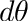
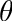

|
v1.3.8
|
Loading...
Searching...
No Matches
|
v1.3.8
|
Known Issues
| Dependencies | None |
|---|---|
| CMakeLists.txt | set( PLUGINS "plantarchitecture" ) |
| Header File | #include "PlantArchitecture.h" |
| Class | PlantArchitecture |
| Constructors |
|---|
| PlantArchitecture( helios::Context* ) |
| Primitive Data Label | Symbol | Units | Data Type | Description | Available Plug-ins | Default Value |
|---|
| Primitive Data Label | Data Type | Description |
|---|---|---|
| rank | int | Rank of shoot primitive belongs to. |
The coordinate system of plant organs is defined with respect to it's parent element (i.e., element it originated from), with it's default orientation being aligned with it's parent's axis. It can then be rotated based on angles (always in radians) of 'pitch', 'yaw', and 'roll' (in that order):
Pitch: rotation angle formed between the axis of the element and it's parent's axis.
Yaw: rotation angle about the parent's axis (except in the case of a leaf, where it is about an axis perpendicular to the leaf midrib).
Roll: rotation angle about the element's own axis

Nearly all parameters in the architectural model can either be specified as a constant value, or as a random variable following several pre-defined distributions.
Parameters that can be randomized have type of RandomParameter_float or RandomParameter_int depending on the parameter value type. If the parameters are assigned a constant value, they are set the same as a regular float or int. The val() method is used to get the value of the parameter.
In order to randomize the variable, member methods can be called to set the distribution type and specify the distribution parameters. It is also required to initialize the variable with a random number generator. It is recommended that this be based on the Context's generator to keep everything consistent. Below is an example.
Available distributions are listed below
| Distribution | Method | Parameters |
|---|---|---|
| Uniform | uniformDistribution() | minimum value, maximum value |
| Normal | normalDistribution() | mean, standard deviation |
| Weibull | weibullDistribution() | shape parameter, scale parameter |
The geometry of plant leaves, flowers, and fruit are defined based on ‘prototype’ models that can be specified in a number of ways. Each time one of these organ types is to be generated in the model, a user-defined function is called to add the geometry. The user can write a function to add a Tile object, a mesh of triangles, load a polygon model from file, or any other desired method.
The prototype functions must return an object ID (uint) corresponding to the compound object created in the function. Arguments to the prototype function vary based on organ type:
Leaves
Flowers
Fruit
The arguments do not necessarily need to be used inside the prototype function, but are always passed to the function in case they are needed.
The size, position, and orientation of the prototype when it is created needs to follow a specific convention.

A generic leaf prototype function is given below, which simply loads a model from an OBJ file.
A generic leaf prototype function is given in the file Assets.cpp, which creates a leaf from a mesh of triangles, and has adjustable parameters to add leaf curvature, folding, and waves.
The phytomer is the basic unit of a shoot, and consists of an internode, one or more petioles, leaves, and inflorescence if present. The internode consists of a tube whose base is connected either to a parent shoot if it is the first phytomer along a shoot, or to the end of another phytomer along the same shoot.
A phytomer can have one or more petioles, which are connected at the end of the internode. Each petiole has one or more leaves.
At the base of the petiole, there may be one or more vegetative buds that can develop into a new shoot, and one or more floral buds that can develop into a fruit. The vegetative and floral buds can break into a new shoot/flower in the same growing season, or may need a winter dormancy period before breaking, depending on the value of the parameters growth_requires_dormancy and flowers_require_dormancy in the ShootParameters structure. It is also possible that a bud never breaks, and once a bud breaks it is considered dead.
At the tip of a growing shoot (i.e., end of the last phytomer on the shoot), there is an apical vegetative bud that can spawn a new phytomer along the same shoot. During a dormant period, one or more apical floral buds can also be created.

| Parameter | Type | Units | Description |
|---|---|---|---|
| — internode — | |||
| pitch | RandomParameter_float | degrees | Angle of the phytomer internode with respect to the previous phytomer along the shoot. Setting this >0 creates a zig-zag shoot. |
| phyllotactic_angle | RandomParameter_float | degrees | Angle between the petioles/buds of two successive phytomers along the shoot. |
| max_vegetative_buds_per_petiole | RandomParameter_int | - | Maximum number of possible vegetative nodes per petiole. Some of these buds may not break depending on the vegetative bud break probability. |
| max_floral_buds_per_petiole | RandomParameter_int | - | Maximum number of possible floral nodes per petiole. Some of these buds may not break depending on the flower bud break probability. |
| color | helios::RGBcolor | - | Diffuse color of the internode tube. |
| length_segments | uint | - | Number of longitudinal segment subdivisions of the internode tube. |
| radial_subdivisions | uint | - | Number of radial subdivisions segments of the internode tube (e.g., =4 gives a square cross-section; =5 gives a pentagonal cross-section, etc.) |
| — petiole — | |||
| petioles_per_internode | uint | - | Number of petioles emanating from a single internode (e.g., for an 'opposite' growth pattern, = 2) |
| pitch | RandomParameter_float | degrees | Angle of the petiole base axis with respect to its parent phytomer axis. |
| radius | RandomParameter_float | meters | Radius of petiole cross-section. (radius = 0 does not create any petiole) |
| length | RandomParameter_float | meters | Length of the petiole tube. (length = 0 does not create any petiole) |
| curvature | RandomParameter_float | degrees/meter | Curvature angle of the petiole per unit length of petiole. If curvature is positive, petiole curves upward toward vertical. If negative, curvature is downward. |
| taper | RandomParameter_float | - | Ratio between the petiole radius at the tip to the radius at the base (e.g., =1 has no taper, =0 comes to a point at the tip). |
| color | helios::RGBcolor | - | Diffuse color of the petiole tube. |
| length_segments | uint | - | Number of longitudinal segment subdivisions of the petiole tube. |
| radial_subdivisions | uint | - | Number of radial subdivisions segments of the petiole tube (e.g., =4 gives a square cross-section; =5 gives a pentagonal cross-section, etc.) |
| — leaf — | |||
| leaves_per_petiole | uint | - | Number of leaves on each petiole. >1 creates a compound leaf. |
| pitch | RandomParameter_float | degrees | Angle of the leaf axis with respect to its parent petiole axis. |
| yaw | RandomParameter_float | degrees | Rotation angle of the leaf about its base along the plane of its lamina. |
| roll | RandomParameter_float | degrees | Rotation angle of the leaf about it's own axis (midrib). |
| leaflet_offset | RandomParameter_float | - | If a compound leaf (leaves_per_petiole>1), this sets the spacing between adjacent leaflets along the petiole as a fraction of the petiole length. |
| leaflet_scale | RandomParameter_float | - | If a compound leaf (leaves_per_petiole>1), this sets the scaling factor of the leaflet moving down the petiole with respect to the previous leaf (<1 scales down, >1 scales up). |
| prototype_scale | RandomParameter_float | - | Scaling factor applied to the leaf prototype. Usually the prototype has unit length, so this sets the physical length of the leaf. |
| prototype_function | function pointer | - | Pointer to a function that generates the leaf prototype model. Function takes arguments ( helios::Context*, uint subdivisions, int flag ) and returns an object ID (uint). |
| — peduncle — | |||
| length | RandomParameter_float | meters | Length of the peduncle (inflorescence supporting structure). |
| radius | RandomParameter_float | meters | Radius of the peduncle. |
| pitch | RandomParameter_float | degrees | Angle of the peduncle axis with respect to its parent internode axis. |
| roll | RandomParameter_float | degrees | Rotation angle of the peduncle about it's own axis. |
| curvature | RandomParameter_float | degrees/meter | Curvature angle of the peduncle per unit length of peduncle. If curvature is positive, peduncle curves upward toward vertical. If negative, curvature is downward. |
| length_segments | uint | - | Number of longitudinal segment subdivisions of the inflorescence supporting structure. |
| radial_subdivisions | uint | - | Number of radial subdivisions segments of the inflorescence supporting structure (e.g., =4 gives a square cross-section; =5 gives a pentagonal cross-section, etc.) |
| — inflorescence — | |||
| flowers_per_rachis | RandomParameter_int | - | Number of flowers per peduncle (rachis). |
| flower_offset | RandomParameter_float | - | If peduncle has multiple flowers/fruit (flowers_per_rachis>1), this sets the spacing between adjacent flowers/fruit along the peduncle as a fraction of the peduncle length. |
| flower_arrangement_pattern | std::string | - | Pattern of flower arrangement on the peduncle (rachis): one of "alternate" or "opposite". Only used if flowers_per_rachis > 1. |
| pitch | RandomParameter_float | degrees | Angle of the fruit axis with respect to its parent peduncle axis. |
| roll | RandomParameter_float | degrees | Rotation angle of the fruit about it's own axis (x-axis of fruit prototype). |
| flower_prototype_scale | RandomParameter_float | - | Scaling factor applied to the flower prototype. Usually the prototype has unit length, so this sets the physical length of the flower. |
| flower_prototype_function | function pointer | - | Pointer to a function that generates the flower prototype model. Function takes arguments ( helios::Context*, uint subdivisions, bool flower_is_open ) and returns an object ID (uint). |
| fruit_prototype_scale | RandomParameter_float | - | Scaling factor applied to the fruit prototype. Usually the prototype has unit length, so this sets the physical length of the fruit. |
| fruit_prototype_function | function pointer | - | Pointer to a function that generates the fruit prototype model. Function takes arguments ( helios::Context*, uint subdivisions, float time_since_fruit_set ) and returns an object ID (uint). |
The rotation of each organ (internode, petiole, leaf, peduncle, inflorescence) is defined relative to the axis of its parent following the pitch, yaw, roll convention described above.
The phytomer parameters are stored in a data structure (struct) called PhytomerParameters. This structure has sub-member structs for each of internode, leaf, petiole, and inflorescence, each containing the parameters for that element type as designated in the table above. Below is an example of how to set a few of the parameters:
The figure below provides some examples of how various shoot growth patterns (e.g., alternate, opposite) can be created by varying the model parameters.

Compound leaves consist of a single petiole with multiple leaves (leaflets) attached. The number of leaflets is specified by the parameter leaves_per_petiole in the PhytomerParameters structure (if leaves_per_petiole = 1, it is not a compound leaf). The compound leaf is formed by making a copy of the leaf prototype, and scaling, rotating, and translating it based on the position along the petiole. If there is an even number of leaflets, there will be two leaves attached to the tip of the leaf at an angle of 60 degrees from each other, whereas if the number of leaflets is even there will be a single leaf attached to the tip. The size of these tip leaves is set by the parameter leaf_prototype_scale. If the number of leaflets is greater than 2, additional leaflets are added running down the petiole in an opposite pattern. The spacing between adjacent leaflets is specified as a fraction of the petiole length by the parameter leaflet_offset, and the scaling factor of the leaflet moving down the petiole with respect to the previous leaflet is specified by the parameter leaflet_offset. The leaflets along the petiole can either get bigger or smaller than the tip leaf/(leaves) according to the parameter leaflet_scale (<1 gets smaller, >1 gets bigger).

Alternatively, a compound leaf could be created by adding a single "leaf prototype" that contains all of the leaflets in a single model/mesh and specifying 1 leaf per petiole. However, the drawback of this is that it would not be possible to add random variation to the appearance of the compound leaf (e.g., leaf pitch angle, leaf yaw angle, etc.).

A shoot is the fundamental topological unit of organization in the plant architectural model, and consists of a series of connected phytomers. Each phytomer contains one or more vegetative buds at the point where the petioles meet the internode, which have the possibility to spawn child shoots.
Parameters defining the geometry and growth of the shoot are given in the ShootParameters structure. Each parameter in the ShootParameters structure is summarized in the table below, and described in more detail in the following sections.
| Parameter | Type | Units | Description |
|---|---|---|---|
| — Phytomer Parameters — | |||
| phytomer_parameters | PhytomerParameters | - | Parameters defining the geometry of the phytomers comprising this shoot. |
| — Geometric Parameters — | |||
| max_nodes | RandomParameter_int | - | Maximum number of nodes/phytomers along a shoot. |
| base_roll | RandomParameter_float | radians | Roll angle of the first phytomer of the shoot about the shoot axis relative to vertical. |
| internode_radius_initial | RandomParameter_float | meters | Initial radius of the internode at the base of the shoot. |
| child_insertion_angle_tip | RandomParameter_float | degrees | Angle of the child shoot with respect to the parent shoot at the tip of the parent shoot. |
| child_insertion_angle_decay_rate | RandomParameter_float | degrees/node | Rate of increase of the child insertion angle moving down the parent shoot. |
| child_internode_length_max | RandomParameter_float | meters | Maximum length (with respect to position along the parent shoot) of the internode of a child shoot. |
| child_internode_length_min | RandomParameter_float | meters | Minimum length (with respect to position along the parent shoot) of the internode of a child shoot. |
| child_internode_length_decay_rate | RandomParameter_float | meters/node | Rate of decrease of the internode length moving down the parent shoot. |
| base_roll | RandomParameter_float | degrees | Roll angle of the shoot, which effectively specifies the angle of the first petiole relative to the parent shoot. |
| base_yaw | RandomParameter_float | degrees | Yaw angle of the shoot relative to the parent shoot. |
| gravitropic_curvature | RandomParameter_float | degrees/meter | Curvature angle of the shoot per unit length of shoot. If curvature is positive, shoot curves upward toward vertical. If negative, curvature is downward. |
| tortuosity | RandomParameter_float | - | Factor determining the amount of random "wiggle" in internode growth along the shoot. |
| — Growth Parameters — | |||
| phyllochron | RandomParameter_float | days/leaf | Time between the emergence of successive phytomers along the shoot. |
| leaf_flush_count | uint | - | Number of leaves/phytomers to flush at a time. Flushes will occur at an interval of phyllochron*leaf_flush_count. |
| elongation_rate | RandomParameter_float | meters/day | Rate of elongation of the internode of the shoot. |
| girth_growth_rate | RandomParameter_float | meters/day | Rate of increase of the internode radius of the shoot. |
| vegetative_bud_break_probability | RandomParameter_float | - | Probability of a bud breaking dormancy and emerging as a shoot. |
| flower_bud_break_probability | RandomParameter_float | - | Probability of a flower bud emerging as a flower. |
| fruit_set_probability | RandomParameter_float | - | Probability of a flower becoming a fruit. |
| vegetative_bud_break_time | RandomParameter_float | days | Amount of time after the bud is created or after dormancy is broken for the vegetative bud to break. |
| growth_requires_dormancy | bool | - | Flag indicating whether or not the vegetative buds require a winter dormancy period to break into a shoot. If true, the shoot will emerge in the same growing season as the parent shoot. If false, the shoot will emerge from a bud that requires a winter dormancy period. |
| flowers_require_dormancy | bool | - | Flag indicating whether or not the flower buds require a winter dormancy period to emerge. If true, the flowers will emerge in the same growing season as the parent shoot. If false, the flowers will emerge from a bud that requires a winter dormancy period. |
| determinate_shoot_growth | bool | - | Flag indicating whether or not shoot growth is determinate. If true, shoot growth will stop once flowering occurs, and the apical bud will become dormant. If false, the shoot will continue growing after flowering. |
max_nodes is the maximum number of phytomers that a single shoot can grow to have. Leaves will continue to emerge from the terminal bud according to the phyllochron until max_nodes is reached.
phyllotactic_angle is the angle that each phytomer is rotated about the internode axis relative to the previous phytomer along the shoot. For a shoot with an "opposite" leaf arrangement, the phyllotactic angle should be set to 0 and PhytomerParameters::internode::petioles_per_internode should be set to 2. For an "opposite" leaf arrangement, the phyllotatic angle should be 180 degrees. The "golden angle" of phyllotaxis is 137.5 degrees.
See this page for more information on phyllotaxis.
base_roll is the roll angle of the first phytomer of the shoot about the shoot axis relative to vertical. If base_roll = 0, the first petiole along the shoot will be vertical (or as vertical as is possible given the shoot direction and the specified angle of the petiole relative to the internode). This parameter is used to set the initial orientation of the shoot. For example, if base_roll = 0, the first phytomer of the shoot will be oriented vertically. If base_roll = 0.5, the first phytomer of the shoot will be oriented 0.5 radians (about 30 degrees) from vertical.
Will come back to this later. It is currently used in two places: 1. within addPhytomerToShoot() to set the radius of the internode added to an existing shoot, and 2) within buildShootPhytomers() to either set the radius of the internodes if it is the trunk/base, or the radius is set as a fraction of internode_radius_iniitial.
The insertion angle of child shoots is the angle that a child shoot makes with its parent shoot growth axis.
The methodology for determining the insertion angle of a child shoot differs depending on whether the shoot emerges from a bud that requires a winter dormancy period (proleptic shoot), or whether the shoot emerges in the same growing season. This behavior is set based on the parameter ShootParameters::growth_requires_dormancy (more information on this parameter below).
For buds NOT requiring dormancy (ShootParameters::growth_requires_dormancy = false), the insertion angle of the child shoot is simply given by the parameter child_insertion_angle_tip (degrees). (In this case, the parameter child_insertion_angle_decay_rate is not used.)
For buds requiring dormancy (proleptic; ShootParameters::growth_requires_dormancy = true), the insertion angle of the child shoot is the smallest at the tip of the shoot (at the time dormancy is broken) and increases moving down the shoot toward and angle of 90 degrees.
As shown in the figure below, the insertion angle at the shoot tip is given by the parameter child_insertion_angle_tip (degrees). The angle increases linearly at a rate of child_insertion_angle_decay_rate (units of degrees per node) until it reaches a maximum insertion angle of 90 degrees. For example, if child_insertion_angle_tip = 20 degrees and child_insertion_angle_decay_rate = 20 degrees/node, the insertion angle at the second node from the tip would be 40 degrees, 60 degrees at the third node, 80 degrees at the fourth node, and 90 degrees at all subsequent nodes, up until reaching the previous year's growth.

The "potential" or fully elongated internode length is specified for a shoot, and is constant along the length of the shoot. When a phytomer emerges from a bud (either apical or lateral along a parent shoot) it's internode is scaled to some short initial size, and elongates over time according to the elongation rate parameter (see below).
Similar to determination of the child insertion angle, the methodology for determination of the fully elongated internode length of a child shoot depends on whether or not the child shoot is emerging from a dormant bud.
For buds NOT requiring dormancy (ShootParameters::growth_requires_dormancy = false), the potential length of internodes along a shoot is determined according to the value of the child_internode_length_max parameter.
For buds requiring dormancy (proleptic; ShootParameters::growth_requires_dormancy = true), the potential length of a shoot's internodes is maximum at the tip of the shoot (at the time dormancy is broken) and decreases moving down the shoot. The potential length of the internode at the tip of the shoot is given by the parameter child_internode_length_max. The length decreases linearly at a rate of child_internode_length_decay_rate (units of meters per node) until it reaches a minimum length given by the parameter child_internode_length_min. For example, if child_internode_length_max = 0.1 m, child_internode_length_min = 0.01 m, and child_internode_length_decay_rate = 0.03 m/node, the potential length of the internode at the second node from the tip would be 0.07 m, 0.04 m at the third node, 0.01 m at the fourth node, and 0.01 m at all subsequent nodes, up until reaching the previous year's growth.

The tendency of shoots to grow toward vertical is given by the parameter gravitropic_curvature. This parameter is the curvature angle of the shoot per unit length of shoot. If curvature is positive, the shoot curves upward toward vertical. If negative, the shoot curves downward. Once the shoot has reached vertical, it will continue to grow vertically. For example, a shoot that emerges from the bud growing horizontally with gravitropic_curvature = 90 degrees/meter will curve upward such that it will be growing upward after the first meter of growth.
Random "wiggle" can be added to shoot growth using the tortuosity parameter. Each time a phytomer is added to the shoot, some constant amount of differential curvature is added according to the parameter gravitropic_curvature. To introduce random variation, an additional amount of noise is added to the curvature based on a Langevin-like equation (Brownian motion):
![\[
d\theta = \frac{1}{2}\left(C_g-\theta\right)dL + T\xi(dL)
\]](form_139.png)
where  is the change in curvature angle of the current phytomer internode relative to the previous internode,  is the integrated curvature angle relative to the base of the shoot,  is the internode length,
is the internode length,  is the tortuosity, and
is the tortuosity, and  is a Gaussian process with variance of .
is a Gaussian process with variance of .
The phyllochron parameter is the time between the emergence of successive phytomers from the shoot terminal bud. Note that if the number of nodes/phytomers along the shoot reaches gravitropic_curvature, the terminal bud will die and cease producing new phytomers.
The elongation_rate parameter is the rate of axial elongation of the internode of the shoot. When the phytomer is created the internode is small, and will elongate over time according to elongation_rate until it reaches its potential or maximum internode length as determined by the methodology described above. The elongation rate has units of length added to the internode per day.
The girth_growth_rate parameter is the rate of increase of the internode radius, given as a scaling factor applied to the current radius. The girth growth rate value is the scale factor applied to the current radius per day. For example, if girth_growth_rate = 1.01, the radius of the internode will increase by 1% per day.
Thresholds determining phenological transitions are set using the PlantArchitecture::setPhenologicalThresholds() method.
A number of plant models are available in the plant architecture library, which can be created based on default parameters, or parameters modified by the user. Plant models available in the library are given in the table below.
| Plant Type/Species | Variety/Variation | Plant type string argument | Shoot types | Image at time = 0 | Image at flowering | Image at (reproductive) maturity |
|---|---|---|---|---|---|---|
| Almond Tree (Prunus dulcis) | Nonpareil | "almond" | trunk, scaffold, proleptic, sylleptic | |||
| Common Bean (Phaseolus vulgaris) | upright growth habit (determinate) | "bean" | unifoliate, trifoliate | |||
| Cowpea (Vigna unguiculata) | upright growth habit (determinate) | "cowpea" | unifoliate, trifoliate | |||
| Soybean (Glycine max) | upright growth habit (determinate) | "soybean" | unifoliate, trifoliate | |||
| Sorghum (Sorghum bicolor) | grain sorghum | "sorghum" | mainstem | |||
| Tomato (Solanum lycopersicum) | determinate growth | "tomato" | mainstem | |||
| Sugar Beet (Beta vulgaris) | generic | "sugarbeet" | mainstem |
Loading a plant from the library with default parameters is relatively simple, and requires only declaring the PlantArchitecture class, loading the model using the PlantArchitecture::loadPlantModelFromLibrary() method (which takes a string argument for the plant model as listed in the table above), and calling the PlantArchitecture::buildPlantInstanceFromLibrary() method. The method takes two arguments: 1) the Cartesian (x,y,z) position of the plant base, and 2) the age of the plant in days. A code example is given below.
Building a plant from the library with modified parameters is similar to above, except that the parameters are modified before calling the PlantArchitecture::buildPlantInstanceFromLibrary() method. After calling PlantArchitecture::loadPlantModelFromLibrary(), the parameters can be queried (at the shoot level), modified, and then set.
Parameters are queried based on shoot type (the names of which are given in the table above). The user can either query the ShootParameters structure for a single shoot type based on its label, or for all shoot types in the particular model.
Below is an example of modifying the parameters of a single shoot type:
Below is an example of modifying the parameters for all shoot types:
The model can be grown over time by calling the PlantArchitecture::advanceTime() method, where the argument to this method is the timestep to advance in days.